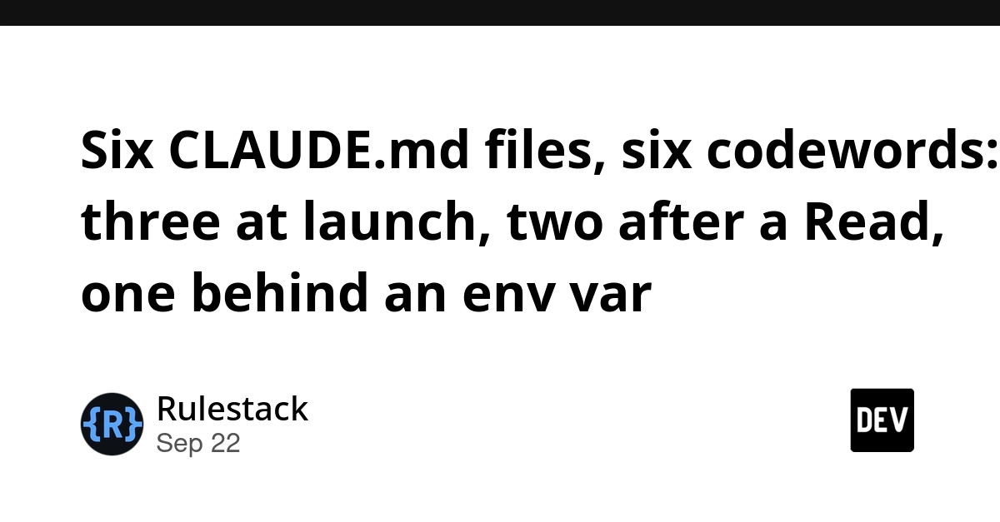
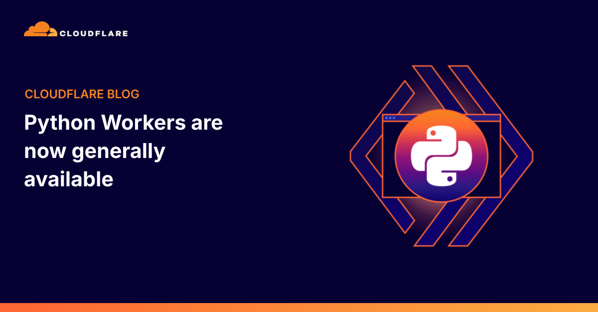
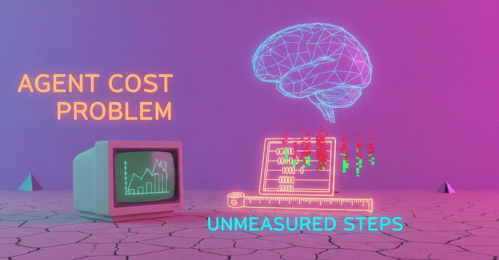
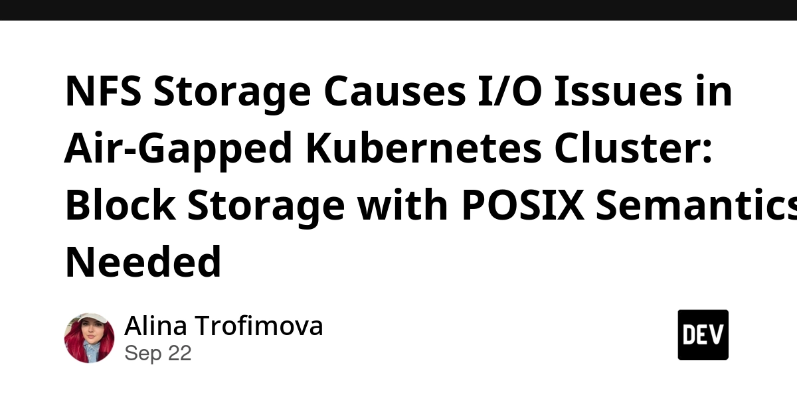
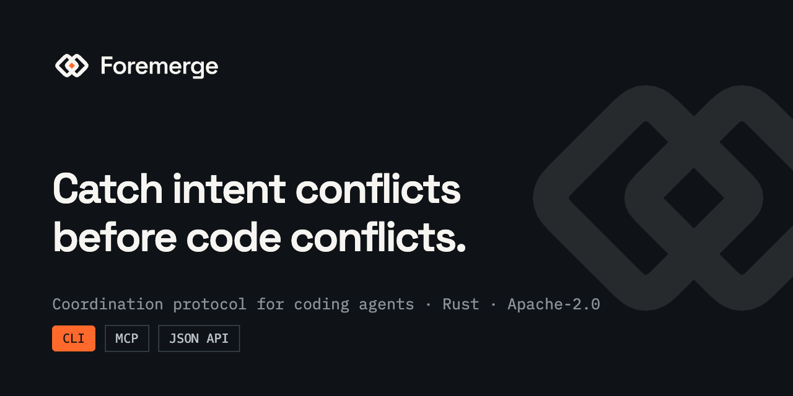
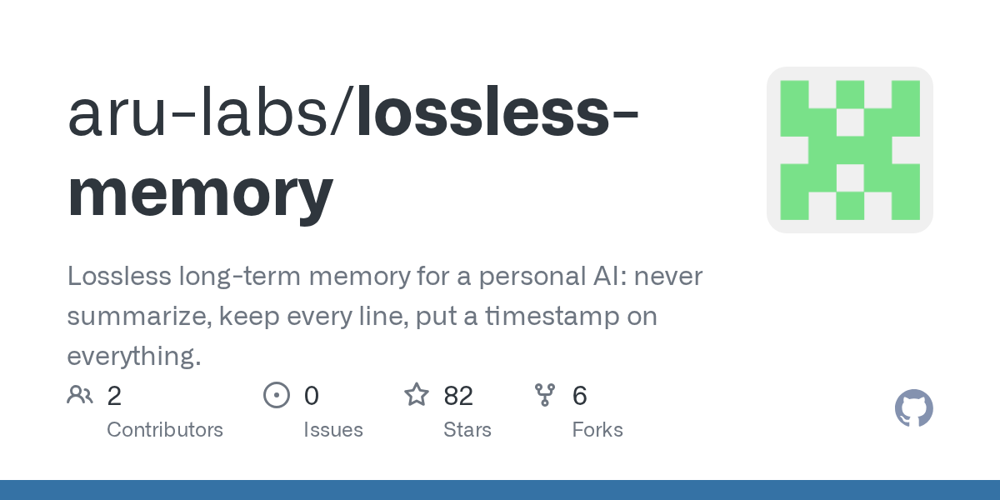
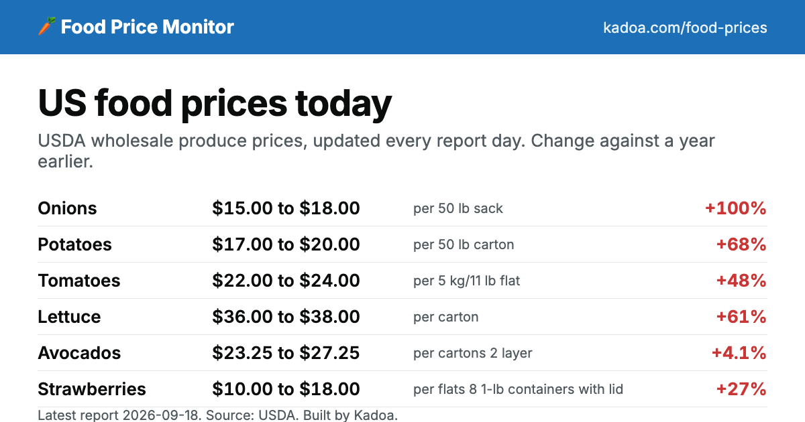
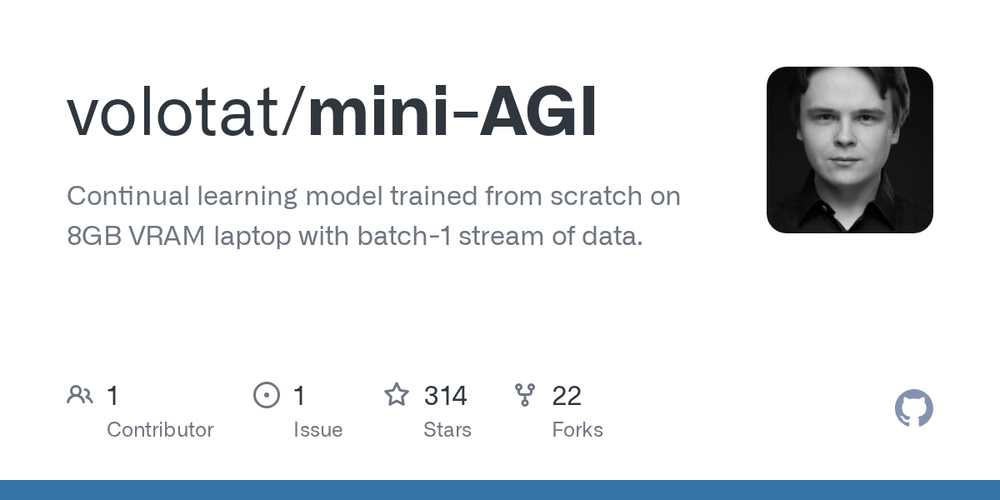

🔥 Top 3 (must read)
AI coding has made CI a bottleneck, so we reworked ours to keep up
(HN discussion) Linear says coding agents now open pull requests faster than their CI could check them, so the pipeline became the slowest part of delivery. They rebuilt CI around the new load, and the HN thread (164 comments) has many teams comparing notes on the same problem. Why it matters: if your team adopts Claude Code or Copilot at scale, CI and test speed become the delivery limit. This is an EM planning topic, not just a tooling one.

Six CLAUDE.md files, six codewords: three at launch, two after a Read, one behind an env var
The author put a unique codeword in six CLAUDE.md files and checked which ones reached the model and when. Parent, working-directory, and CLAUDE.local.md files cost about 1,600 tokens each on the first request, subdirectory files loaded only after a Read below them, and the
--add-dir file never loaded until an environment variable was set. Why it matters: you run Claude Code across many repos. Knowing what loads, when, and what it costs helps you write shared instructions that work and do not waste context.
Cloudflare Python Workers are now generally available
(Cloudflare post) After a two-year preview, Python is now a fully supported language on Cloudflare Workers. It runs Python compiled to WebAssembly through Pyodide inside the same V8 runtime that serves JavaScript Workers. Why it matters: many of your backend services are Python. This gives you an edge deployment option next to your Node.js Workers without a language switch.
S
🛠 Tools & releases
Cloudflare Python Workers GA
Python is a first-class Workers language now. Runs via Pyodide on V8.

Kubernetes v1.37: PVC last-used tracking (Beta)
PVCs get an
Unused condition, on by default. Makes finding orphaned volumes simple, no custom tooling needed.K
🤖 AI for developers
Jev introduces a new shape of LLM — "decision models"
takes text in, but returns a typed decision instead of text. A related hybrid architecture write-up uses Jev for routing and a big model only for reasoning, to cut wasted LLM calls.
S
Your agent's cost problem isn't the model. It's the steps you never measured.
a pipeline burned a month of budget in 3 days. Tagging every token by (step, tool, model) showed trivial steps, not the frontier model, were the cost.

Claude Status — elevated errors for multiple models
(HN) — an incident affecting multiple models. Worth noting if your team depends on Claude Code for daily work.
👔 Engineering & teams
Linear: CI as the new bottleneck
when agents write code faster than CI checks it, the pipeline sets the pace of the team. See Top 3.
NFS storage causes I/O issues in an air-gapped Kubernetes cluster
a 10-node self-managed cluster on NFS-only storage hit limits with I/O-heavy workloads. Case study on when you need block storage with POSIX semantics.

🎯 For me
CI strategy: the Linear post is the strongest EM item today. Ask: how long does a PR wait for CI now, and what happens if PR volume doubles with agents?
Claude Code setup: the CLAUDE.md codeword test is directly useful for your multi-repo setup. Subdirectory files are free until touched, so repo-level instructions can be detailed without a token cost at launch.
Agent cost: the per-step token tagging idea applies to your own bots (news report, Slack bot). Cheap steps on expensive models add up.
Nothing new today for Flutter, React, Playwright, or Maestro.
💡 App ideas & indie builds
Foremerge — catch intent conflicts between parallel coding agents
(HN) — when several agents work on one repo at once, they can make changes that pass merge but conflict in intent. Foremerge detects that early. Problem: teams running many agents now hit a new kind of merge conflict. Inspiring because it is a small tool built for a pain that did not exist a year ago.

Lossless-memory — a personal AI memory that never summarizes
(HN) — most AI memory systems compress old context and lose detail. This one keeps everything and retrieves instead. Problem: people do not trust summaries of their own notes. A good pattern if you build personal assistant tools.

A website that tracks US food prices every day
(HN) — daily scrape of grocery prices shown as trends. Problem: people feel prices rising but have no simple, daily data. Shows how a scraper plus a clean chart page can become a product on its own.

Mini-AGI — continual learning model trained on 8GB VRAM
(HN) — a research toy: a model that keeps learning over time on a consumer GPU. Less of an app, more of a reminder that interesting ML side projects can run on cheap hardware.

🎓 Try this
Run the CLAUDE.md codeword test on your own repo tree. Put a unique word in each CLAUDE.md (global, parent folder, repo, subfolder) and ask Claude Code which words it can see at launch and after reading a file in a subfolder. It takes 10 minutes and shows exactly what your setup loads and what it costs. Guide: Six CLAUDE.md files, six codewords.